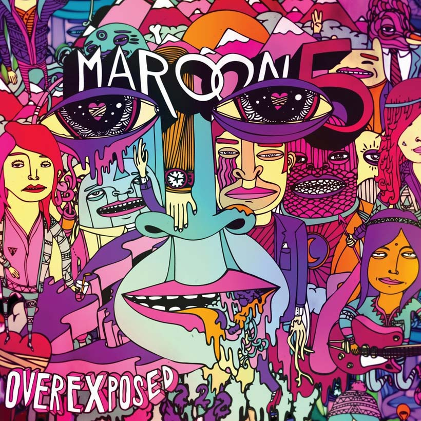

A letra dessa música retrata as experiências pessoais do cantor em relacionamentos amorosos. Foi escrita e gravada na casa dos pais do artista. Alcançou o top 1 de 26 países e o top 10 em mais 30 países diferentes.
Carly Rae Jepsen
Call Me Maybe
Segundo a cantora, a música remete as inconveniências que o amor a primeira vista traz, retratando uma garota que fica esperando uma ligação do novo crush .
Fun ft. Janelle Monáe
We are Young
A música ficou no top 1 dos EUA por 6 semanas seguidas, sendo a primeira música dos artistas a atingir o top 100 e o top 1.
Maroon 5 ft. Wiz Khalifa
Payphone
Segundo os artistas a música descreve um romance que acaba repentinamente. A música também atingiu o top 2 nos EUA.

Ellie Goulding
Lights
Segundo a cantora, a música foi inspirada no medo do escuro que ela tinha durante a infância. A música atingiu o top 20 em diversos países e o top 2 nos EUA.